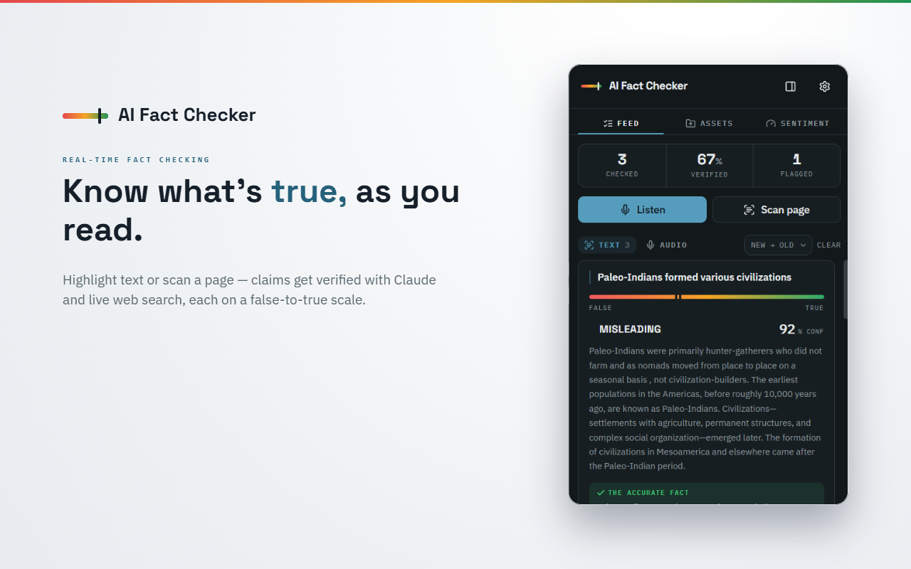
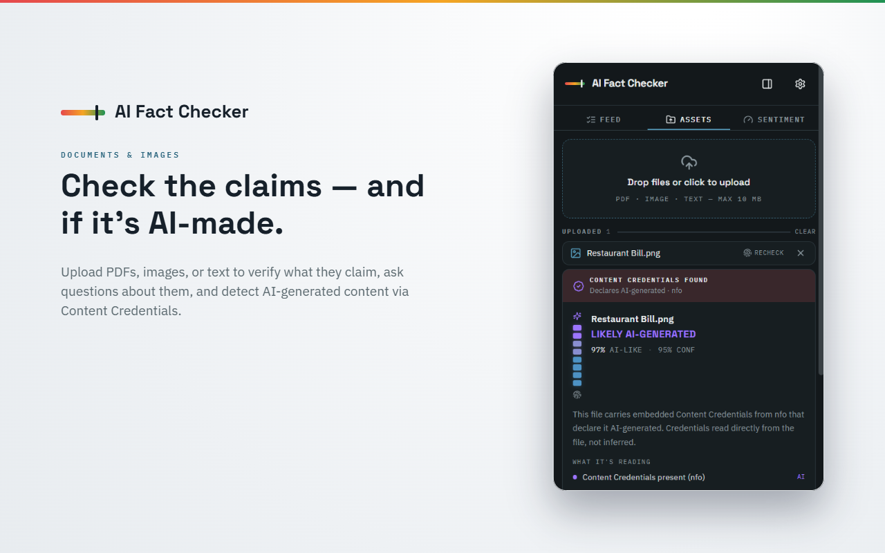
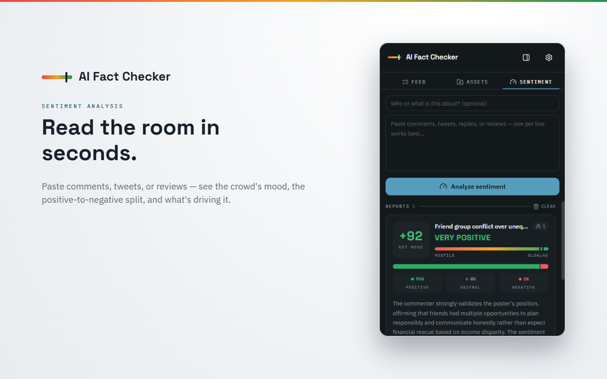

A browser extension that checks whether claims are accurate in real time, using Claude with live web search. Verify text, video audio, and files, right where you find them.
From a highlighted sentence to a whole video, get a grounded verdict with sources.
Highlight any passage or scan a full article. Claims are verified with web search and rated on a true to false scale.
Fact-check a YouTube or any video tab while it plays. The audio is transcribed and spoken claims are checked as they happen.
Upload a PDF, image, or text file to check the claims inside it, or ask questions grounded in the file.
Paste comments, tweets, or reviews to read the overall mood, the positive to negative split, and the themes driving it.
Check whether an image or document was made by AI, using verifiable Content Credentials where present, with an honest likelihood otherwise.
False claims come with the accurate fact, and you can ask follow-up questions about any result right on the card.
A calm, focused interface built around a single idea: is this true?

Verdicts on a true-to-false scale, with sources.
Check documents and detect AI-made images.
Read the mood of a pile of comments in seconds.No account, no server in the middle. You are in control the whole way.
Paste your own Anthropic Claude API key in settings. It is stored only in your browser.
Highlight text, scan a page, listen to a video, or upload a file. You choose every time.
Claude searches the web and returns a rated result with sources, and the correct fact when something is wrong.
Your API key and history live only in your browser. Content you check goes straight to the AI providers you choose, which are Anthropic and, for audio only, Deepgram. It never goes to us. There is no tracking and no account.